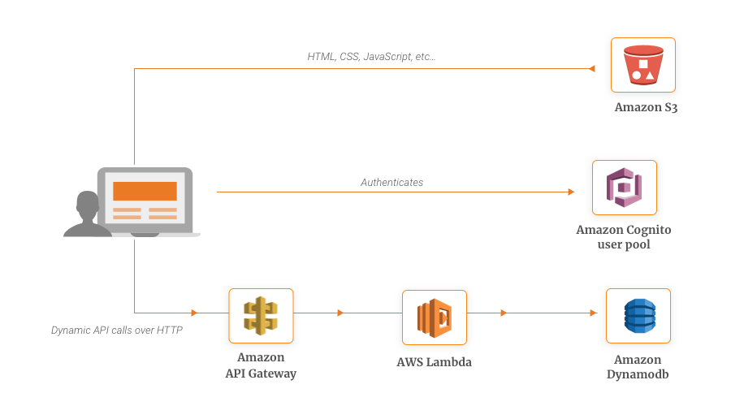

Voorstel Aanvraagplatform
FluidIT
Voorstel Webshop Netconnect
Door Koen Roevens (FluidIT)
eCommerce Future
- Modern SMB WebShop Architecture
- Netconnect architecture tracer bullet
Advantages
- Full set of features
- Easy to find expertise
Painpoints
- Complexity
- Hard to rollout new versions
- Sandboxed templating
- Vendor lock in
- Slow progress
'Software is eating the world'
More info @ https://www.fluid-it.be
Cloud native applications - Serverless
 Microservices
Serverless functions
Microservices
Serverless functions
UI rollercoaster
- Html 5
- Mobile
- Single Page Applications
- Responsive design
- Proggressive web apps
- ...
JAMCommerce Advantages
- Bring Your Own Frontend
- Speed
- Simple
- Lean and mean
- Developer/designer friendly
- Secure
- Evolutionary system
JAMCommerce Painpoints
- Building huge sites
- Brand new
QoR architecture
- Golang
- Composable
- RAD
- Gorm
- Rest
- CMS
- Images
- Publish workiflow
- ...
Serverless website architecture

3rd party apis
- Netlify
- Snipcart
- Moltin
- Formspree